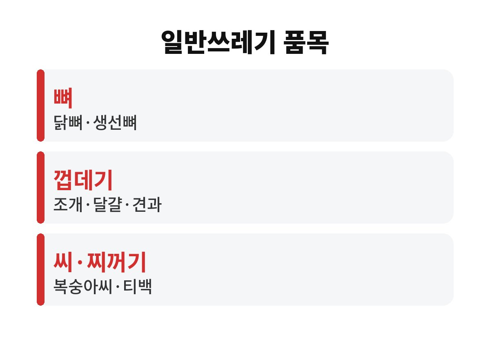

음식물쓰레기 분리배출은 사료나 퇴비로 다시 쓸 수 있는 것만 넣는다는 기준 하나로 대부분 풀린다.
닭뼈, 조개껍데기, 복숭아씨처럼 딱딱하거나 잘 썩지 않는 것은 일반 종량제봉투로 간다.
헷갈리는 품목은 대개 정해져 있다.
이 기준을 처음 들으면 아깝다는 생각이 든다.
하지만 처리 시설에서 뼈나 씨가 섞이면 파쇄 설비가 멈추거나 사료 품질이 떨어진다.
결국 음식물쓰레기를 다시 쓰려면 들어가는 재료가 깨끗해야 한다.
양파·마늘·대파의 껍질과 뿌리는 질기고 수분이 적어 처리 시설에서 잘 갈리지 않는다.
그래서 많은 지자체가 이 껍질을 일반쓰레기로 안내한다.
같은 채소라도 무른 잎이나 꼭지는 음식물로 넣는다.
대파 뿌리에 흙이 많이 묻어 있으면 더더욱 음식물 용기에 넣지 않는다.
귤·바나나·사과 껍질은 음식물쓰레기다.
반면 호두·밤·땅콩 같은 견과류 껍데기와 달걀껍데기, 조개·소라·게 껍데기는 일반쓰레기다.
파인애플 껍질과 옥수수 껍질·속대도 질겨서 일반쓰레기로 분류하는 곳이 많다.
반대로 오래돼 딱딱하게 굳은 밥이나 떡도 음식물로 넣는 데에는 문제가 없다.
실제로는 시·군·구 조례에 따라 품목 기준이 조금씩 다르다.
예전 동네에서 음식물로 넣던 것이 이사한 곳에서는 일반쓰레기일 수 있다.
이사한 뒤에는 새 동네 구청 누리집의 배출 안내를 한 번 다시 보는 게 안전하다.
| 품목 | 배출 방법 | 이유 |
|---|---|---|
| 닭뼈·돼지뼈·소뼈·생선뼈 | 일반 종량제봉투 | 딱딱해 처리 기계 고장 |
| 조개·게·달걀 껍데기 | 일반 종량제봉투 | 사료로 쓸 수 없음 |
| 복숭아·살구·감 씨 | 일반 종량제봉투 | 크고 단단함 |
| 양파·마늘·대파 껍질과 뿌리 | 일반 종량제봉투 | 질겨서 잘 안 갈림 |
| 티백·한약 찌꺼기·커피 찌꺼기 | 일반 종량제봉투 | 사료로 쓸 수 없음 |
| 과일 껍질·채소 잎·남은 밥 | 음식물 전용 용기·봉투 | 사료·퇴비로 처리 가능 |

생선 내장은 음식물로 넣지만 뼈와 가시는 골라내야 한다.
된장·고추장 같은 장류는 염분이 많아 일반쓰레기로 안내하는 지자체가 많다.
남은 국이나 찌개는 건더기만 음식물로 넣고 국물은 거름망에 걸러 물기를 뺀다.
물기를 빼면 무게가 줄어 종량제 수수료도 덜 나온다.
뜨거운 국물을 바로 거름망에 부으면 기름이 굳어 배수구가 막히기 쉬우니 식힌 뒤에 거른다.
기름이 많은 국물은 키친타월에 먼저 흡수시켜 일반쓰레기로 버리면 된다.
단단한 정도로 가르는 방법은 대부분 맞지만 예외가 있다.
수박 껍질은 크고 질기지만 작게 잘라 음식물로 넣도록 안내하는 곳이 많다.
반대로 작고 말랑해 보여도 티백은 종이와 끈 때문에 일반쓰레기다.
나는 헷갈리는 품목만 메모해 냉장고 옆에 붙여 두었다.
메모에는 우리 동네 기준에서 일반쓰레기로 가는 품목만 적었다.
목록이 짧을수록 가족이 실제로 보고 따라 한다.
실수가 가장 많은 곳은 결국 뼈와 껍데기다.
음식물 봉투를 묶기 전에 이 두 가지만 한 번 더 보면 된다.
가정용 음식물처리기를 쓰는 집이라면 공공 배출 기준과 별개로 제품 설명서의 투입 금지 품목을 따로 확인해야 한다.
아파트 단지마다 RFID 종량기 운영 방식이 다르니 관리사무소 안내문도 함께 보면 된다.
여름보다 겨울에는 냄새가 덜해 오래 모아 두기 쉬운데, 물기가 얼면 용기에서 잘 빠지지 않으니 자주 비운다.
참고 자료: 서울특별시 환경분야 누리집 「음식물류 폐기물 분리배출 안내」(2026년 11월 확인)
※ 2026년 기준 공공기관 안내를 바탕으로 정리한 글이며, 집 구조와 제품에 따라 결과가 다를 수 있어 제품 설명서를 함께 확인하길 바란다.